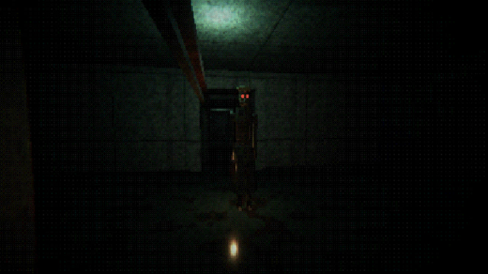
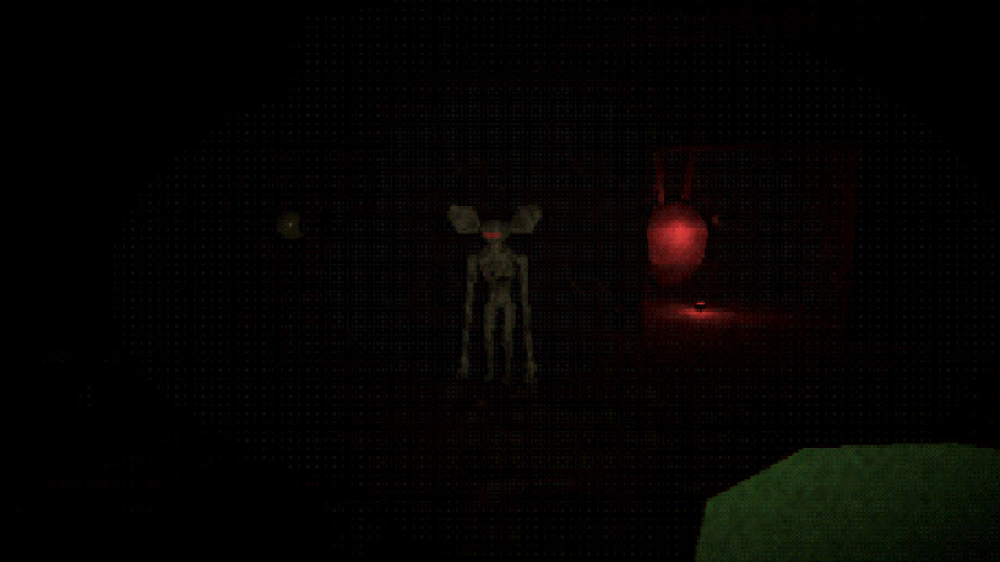
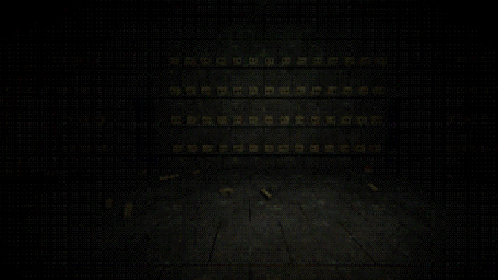
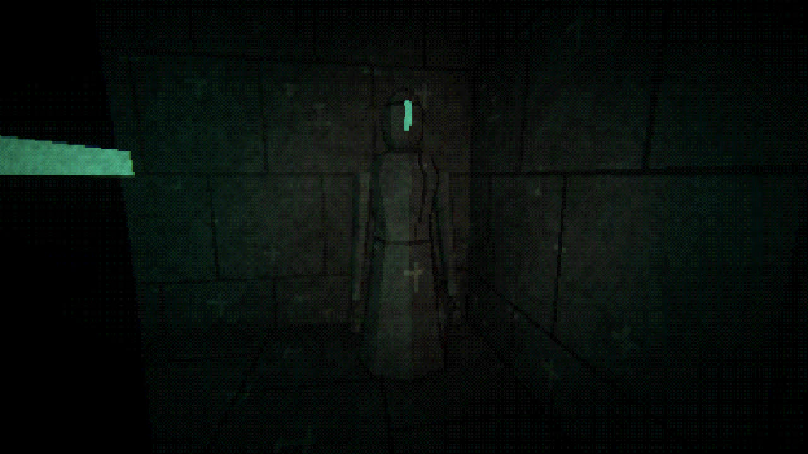
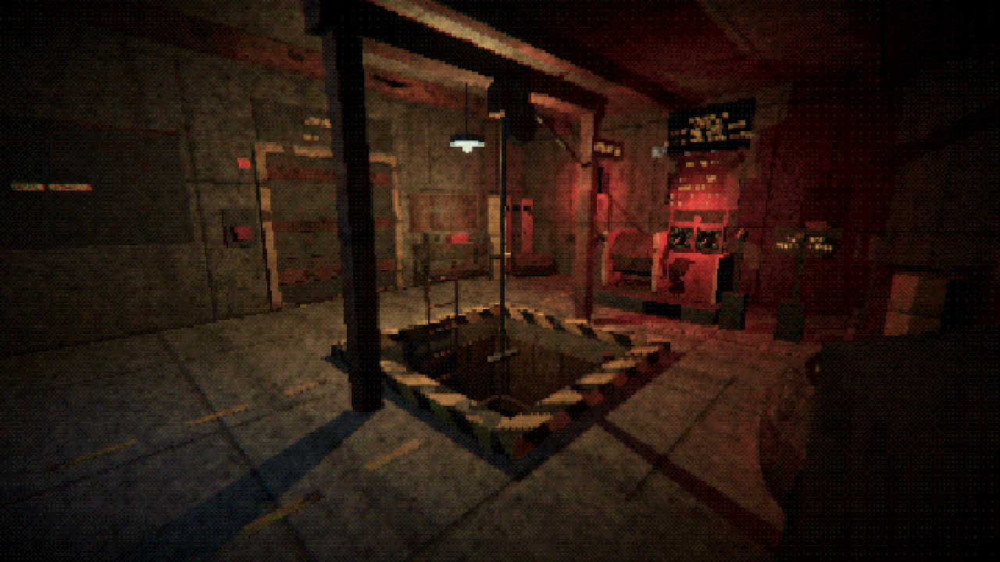
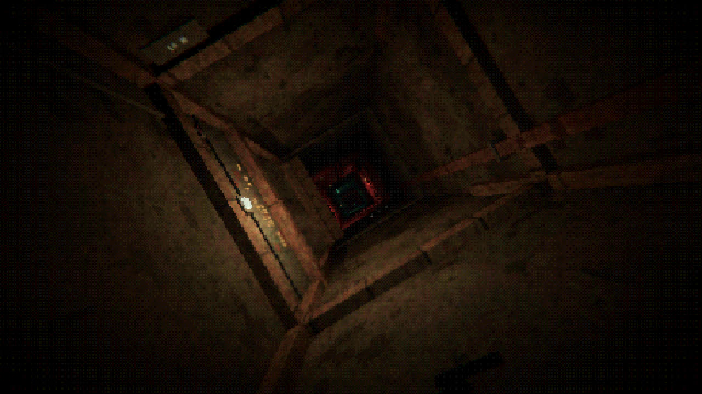

THE TRAILER
THE JOB 1 - 4 PLAYERS
Your crew works a borehole: one rope, one winch, and a hole that goes far deeper than anyone should go. One of you runs the winch. The rest clip on and are lowered into the dark: past an old mine, a flooded bunker, a place that was old before anyone dug down to it, and something at the bottom that is not stone at all.
Bring back whatever you find and feed it to the Feeder. It wants more every day. If it is not fed by the end of the shift, it eats the crew.
WHAT IS DOWN THERE
FROM BELOW






WHAT YOU DO
- Co-op for 1 to 4, or alone
- Proximity voice chat
- Tug the rope to signal the winch
- Four levels, each with a puzzle and a vault
- Endless upgrades between shifts
- Every day the hole gets worse
- Keyboard and mouse, or a controller
- How many days can your crew last?
GO DOWN
Windows 10 / 11, 64-bit · DirectX 11 graphics card · 4 GB RAM ·
Download and run Borehole_Setup. It puts Borehole in your Start menu and on your desktop. If Windows says it protected your PC, click More info, then Run anyway.